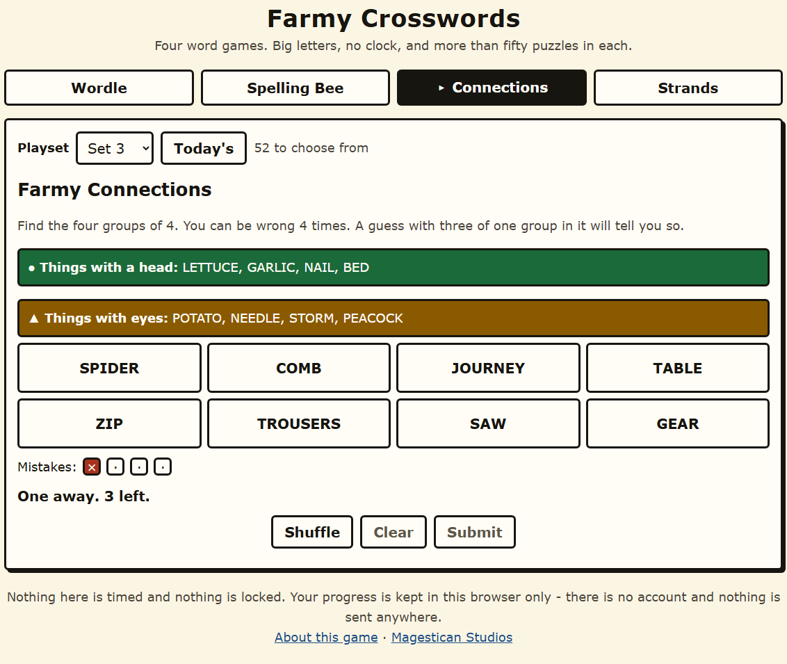

Farmy Crosswords
Four word games on one page, with letters you can actually read and no clock anywhere near them.

The four games
- Farmy Wordle. Six guesses at a five-letter word. Sixty-five words to work through, most of them off a farm.
- Farmy Spelling Bee. Seven letters, the middle one compulsory, four letters minimum. Fifty-three hives, each with its own answer list and its own pangram.
- Farmy Connections. Sixteen words, four secret groups of four, four mistakes. Fifty-two sets, and a wrong guess holding three of one group is told so.
- Farmy Strands. A six-by-eight grid where every single letter belongs to a word about the day's theme, plus a spangram that names the theme and crosses the whole board. Fifty-three grids.
Built for eyes that are not twenty any more
This one was designed to a written brief before a line of it was built, and the brief is about the player rather than the decoration. Ageing eyes lose light and lose the ability to separate low-saturation hues; ageing hands miss small targets. So:
- Nothing is said with colour alone. Every coloured tile also carries a shape in its corner and a spoken label for a screen reader. A Wordle row is green, gold and grey, which is three shades of one thing to about one man in twelve.
- Text clears AAA contrast, not AA. 7:1, not 4.5:1 - the difference between legible and comfortable.
- Nothing is smaller than 18 pixels and nothing you can press is smaller than 48 by 48. There is no small print, because there is nothing worth saying in small print.
- There is no timer. Not in any of the four games, and no streak that a slow week can break. A clock turns a puzzle into a test.
- Nothing moves unless you ask it to. Transitions are 120 milliseconds and are switched off entirely if your browser says you prefer reduced motion.
Every puzzle, today
There is a puzzle of the day in each game, and it rotates through the whole set - but nothing is locked and nothing expires. Every one of the two hundred and twenty-three playsets is in a dropdown on the same screen. A puzzle game that shows an older player one puzzle and then tells them to come back tomorrow has misread who is playing.
No account, no server, nothing sent
Your progress lives in your own browser and goes nowhere else. There is no sign-in, no download, and no network call once the page has loaded - which also means it opens on a work laptop that blocks everything else.